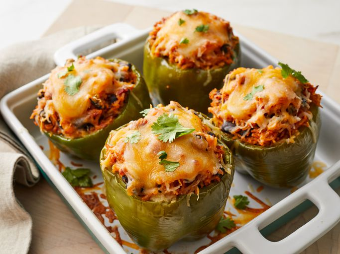

Vegetarian Mexican Inspired Stuffed Peppers

Description:
This vegetarian stuffed peppers recipe is not too spicy, but it is packed with flavor. My kids loved it! For variety, add corn or other vegetables, or switch to other canned tomato varieties. Follow the boiling method prior to baking if you don't want a crispy bell pepper. If you have small peppers, use more of them for this recipe. They taste great with a dollop of sour cream on top.
Ingredients:
- 1 tablespoon salt
- 4 large green bell peppers - tops, seeds, and membranes removed
- 1 tablespoon olive oil
- ½ cup chopped onion
- 2 cups cooked rice
- 1 (15 ounce) can black beans, drained and rinsed
- 1 (14.5 ounce) can chili-style diced tomatoes
- 1 teaspoon chili powder
- 1 teaspoon garlic salt
- ½ teaspoon ground cumin
- ½ teaspoon salt
- 1 (8 ounce) package shredded Mexican cheese blend (such as Sargento® Authentic Mexican)
How to make Vegetarian Mexican Inspired Stuffed Peppers
- Preheat the oven to 350 degrees F (175 degrees C).
- Bring a large pot of water and 1 tablespoon salt to a boil. Add green bell peppers and cook until slightly softened, 3 to 4 minutes.
- Drain bell peppers and arrange cut-side up in a 9x9-inch baking dish.
- Heat olive oil in a skillet over medium heat. Add onion; cook and stir until softened, 5 to 10 minutes.
- Transfer cooked onion into a large bowl; add rice, black beans, and tomatoes. Stir in chili powder, garlic salt, cumin, and 1/2 teaspoon salt until well combined. Fold in 1 1/2 cups Mexican cheese blend.
- Spoon rice mixture evenly into bell peppers; sprinkle with remaining Mexican cheese blend.
- Bake in the preheated oven until cheese is melted and bubbling, about 30 minutes.